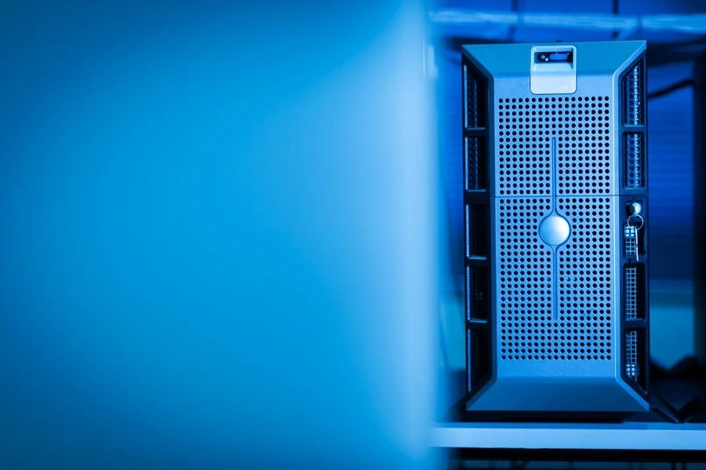

Sunucu ve Veri Merkezi Ürünleri
Tower ve rack sunucular, NAS cihazları, uyumlu sunucu bileşenleri, rack kabinler ve altyapı aksesuarları.
Kesintisiz güç kaynakları, modele uygun UPS aküleri, regülatörler, aşırı gerilim korumalı prizler ve güç dağıtım ürünleri.

VK Bilgisayar olarak bilgisayar, sunucu, ağ ve kayıt cihazları için kesintisiz güç kaynakları ile ilgili güç ürünlerini tedarik ediyoruz. UPS seçeneklerini bağlı cihazların yükü, ihtiyaç duyulan aküden çalışma süresi, bağlantılar ve kullanım ortamına göre değerlendiriyoruz.
UPS, gerilim regülatörü, aşırı gerilim korumalı priz ve güç dağıtım ünitesi farklı işlevlere sahiptir. Kesintide enerji sağlama ihtiyacı ile gerilim düzenleme veya priz dağıtımı ihtiyacı ayrı değerlendirilir. UPS seçiminde VA ve W kapasitesiyle birlikte üreticinin ilgili yüke ait çalışma süresi bilgileri dikkate alınır.
Akü etiketindeki gerilim ve kapasite bilgileri biliniyorsa talebe eklenebilir. Çalışma süresi, yük ve akü durumuna bağlı olarak değişir; yalnızca VA değerinden sabit bir süre sonucu çıkarılmaz.
Tower ve rack sunucular, NAS cihazları, uyumlu sunucu bileşenleri, rack kabinler ve altyapı aksesuarları.
Switch, yönlendirici, modem ve kablosuz erişim noktaları; PoE ve ağ bağlantı ihtiyaçlarına uygun cihaz seçenekleri.
IP ve analog kameralar, DVR/NVR kayıt cihazları, uyumlu kayıt diskleri ve kamera bağlantı aksesuarları.
UPS seçerken VA ve Watt farkını, korunacak cihazların gücünü ve yedekleme süresini nasıl hesaplayacağınızı örnekle öğrenin.
Rehberi inceleKesintisiz güç kaynağı topolojilerini, hassas cihazların ihtiyaçlarını, transfer süresini ve güç kalitesi beklentisini karşılaştırın.
Rehberi inceleUPS akü sağlığını, ortam sıcaklığını, alarm kayıtlarını, kapasite testini ve akü değişiminde güvenlik adımlarını öğrenin.
Rehberi inceleKabin içi PDU seçimini priz tipleri, elektrik kapasitesi ve ölçüm/kontrol özellikleriyle planlayın.
Rehberi inceleTek güç girişli ağ cihazları için Rack ATS, A/B besleme ve UPS bağlantılarını değerlendirin.
Rehberi inceleCihazların toplam yükü, UPS'in VA ve W sınırları, istenen çalışma süresi ve akü yapısı birlikte değerlendirilir. Süre için üreticinin ilgili yükteki çalışma verilerine bakılır. Aynı VA değerine sahip iki UPS'in aynı süreyi sağlayacağı varsayılmamalıdır.
Hayır. VA görünür gücü, W ise aktif gücü ifade eder. UPS seçiminde ürünün her iki kapasite sınırı da dikkate alınmalıdır; yalnızca VA değerine bakılarak bağlı yükün uygunluğu belirlenmez.
Hayır. Aşırı gerilim korumalı prizler belirli gerilim darbelerine karşı koruma amacı taşır; elektrik kesildiğinde aküden enerji sağlama işlevini yerine getirmez. Standart çoklu priz veya PDU da UPS'in akü destekli çalışma işleviyle aynı ürün değildir.
UPS'in marka ve tam modelini, varsa akü modülünün ürün kodunu ve etiket bilgilerini iletebilirsiniz. Gerilim, kapasite, bağlantı ve üreticinin uyumluluk bilgileri birlikte değerlendirilmelidir. Yalnızca fiziksel boyuta göre akü seçilmez.